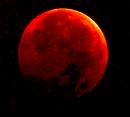

1 Marilyn Monroe born, 1926; Helen Keller dies, 1960, at age 87.
2 NEW MOON, 8:14 A.M. EDT; Grover Cleveland, while president, marries Frances Folsom, 1886.
3 Edward White spends 21 minutes out of capsule in first American spacewalk, 1965, as part of Gemini 4 mission; General Grant loses 6,000 men in one hour at Battle of Cold Harbor, 1864.
4 Henry Ford test-drives first Ford car in Detroit, 1896.
5 World Environment Day; first balloon flight, by Montgolfier brothers, 1783; Robert F Kennedy s shot in Los Angeles, 1968.
6 YMCA founded by George Williams in London, 1844; first drivein movie theater opens, in Camden, New Jersey, 1933.
7 Start of a three-day tornado outbreak; more than 45 twisters kill hundreds of people, 1953.
8 FIRST QUARTER MOON, 11:29 p.m. EDT; 116 people die in Flint, Michigan, tornado, 1953.
9 Ninety people killed this day in 1953 by mile-wide tornado in Worcester, Massachusetts.
10 Ben Franklin flies his kite in a lightning storm with famous results this day in 1752.
13 This day in 1983, Pioneer 10 spacecraft passes farther out from sun than average distance of Neptune (then the farthest planet).
14 Flag Day; earliest sunrise (5:30 A.M. Daylight Saving Time) at 40°N latitude.
16 FULL MOON, 6:27 P.m. EDT; launch of first woman into space (still only woman to go into space alone), Valentina Tereshkova, on Vostok 6, 1963.
17 Philadelphia founded by William Penn, 1682.
18 Fathers Day; Napoleon defeated by the Duke of Wellington atthe Battle of Waterloo, 1815.
19 U.S. government adopts eighthour day for its employees, 1912.
20 SUMMER SOLSTICE, 9:48 P.m. EDT; start of summer and longest day of year (15 hours, 1 minute at 40'N).
22 Jupiter at "heliocentric conjunction" with Saturn (meaning that, from the viewpoint of the sun, Jupiter is passing Saturn-something that happens only once every 20 years); James Christy discovers Pluto's moon, Charon, 1978.
23 Midsummers Eve or St. John's Eve.
24 LAST QUARTER MOON, 9:00 P.M. EDT; Midsummers Day or St. John's Day; Jupiter now appears 3° from Saturn.
25 Twentyfive years ago today, an Eastern Airlines 727 jet is hit by lightning and crashes as it approaches JFK Airport in New York, killing 112 of 124 passengers.
26 Battle of the Little Big Horn, death of General George Custer and his 208 men, 1876; Virginia park ranger Roy C. Sullivan is struck by lightning a seventh time, 1977.
27 Latest sunset (8:33 P.m. EDT) at 40'N latitude.
29 Hurricane Alice drops up to 27 inches of rain on the Lower Rio Grande Valley, 1954.
30 Jupiter nearest Pleiades star cluster (only about 5° away).
1 NEW MOON, 3:20 P.m. EDT, and partial solar eclipse, but not visible from U.S. (see article above); highest tides of year (moon at "perigee," or closest to Earth, just 3 hours from time of new moon).
2 Aviator Amelia Earhart lost in Pacific, 1937.
3 Earth at aphelion (farthest it gets from sun in space: 94,511,989 miles) at 8 P.m. EDT, but Northern Hemisphere is at its most tilted toward the sun, so weather there is hot; Battle of Gettysburg, 1863.
4 Independence Day; death of both John Adams and Thomas Jefferson, 1826 (see article, page 73).
6 This day in 1928, Potter, Nebraska, hailstone falls from the sky (to date, it remains the second largest ever verified: 5.5 inches in diameter and 1.5 pounds).
8 FIRST QUARTER MOON, 8:53 A.M. EDT; the poet Shelley dies in a boating accident at age 29,1822.
10 Most damaging lightning strike in U.S. history, 1926: lightning hit naval ammunition depot in Morris County, New Jersey, killing 16 people, doing $93 million in damage and scattering debris as far as 22 miles away.
13 This night in 1977, a lightning strike plunges New York into darkness, triggering nearly $1 billion worth of looting citywide.
14 Bastille Day.
16 FULL MOON, 9:55 A.M. EDT and total lunar eclipse, visible from parts of U.S. (see article above).
17 Vega is the first star (other than the sun) to be photographed, 1850; Spanish Civil War starts, 1936;
in 1938, "Wrong Way" Corrigan leaves New York in his plane, headed for California, but mistakenly lands in Ireland the next day.
18 The G fragment, probably the biggest piece of Comet Shoemaker-Levy 9, hits the atmosphere of Jupiter in 1994, leaving a roughly Earth-sized dark spot on the clouds of Jupiter, visible even in small telescopes for weeks; two-thirds of Rome burns, while Nero supposedly fiddled, 64 A.D.
21 Franklin Delano Roosevelt nominated for an unprecedented fourth term as president, 1944.
23 The ice cream cone is invented by Charles E. Menches of St. Louis, 1904.
24 LAST QUARTER MOON, 7:02 A.m. EDT; Pioneer Day in Utah.
26 Moon near Saturn this morning, with brighter planet Jupiter to the left (look eastward about 45 to 60 minutes before sunrise); watch for Delta Aquarid meteors from out of south sky in hours after midnight for next week or so.
27 Moon to left of Aldebaran this morning, with Jupiter and Saturn higher to right; Mercury at greatest morning elongation (with a star very near it, viewable with binoculars), lowest in eastern sky about 45 to 60 minutes before sunrise.
28 Miami, Florida, is incorporated with a population of 269, 1896.
30 NEW MOON, 10:25 P.M. EDT, and partial eclipse of sun (second this month), visible from parts of the U.S. (see article above).
31 First drive on moon with Lunar Rover, by Apollo 15 astronauts David Scott and James B. Irwin.
|
 Stay tuned for July's lunar eclipse. |
|
|